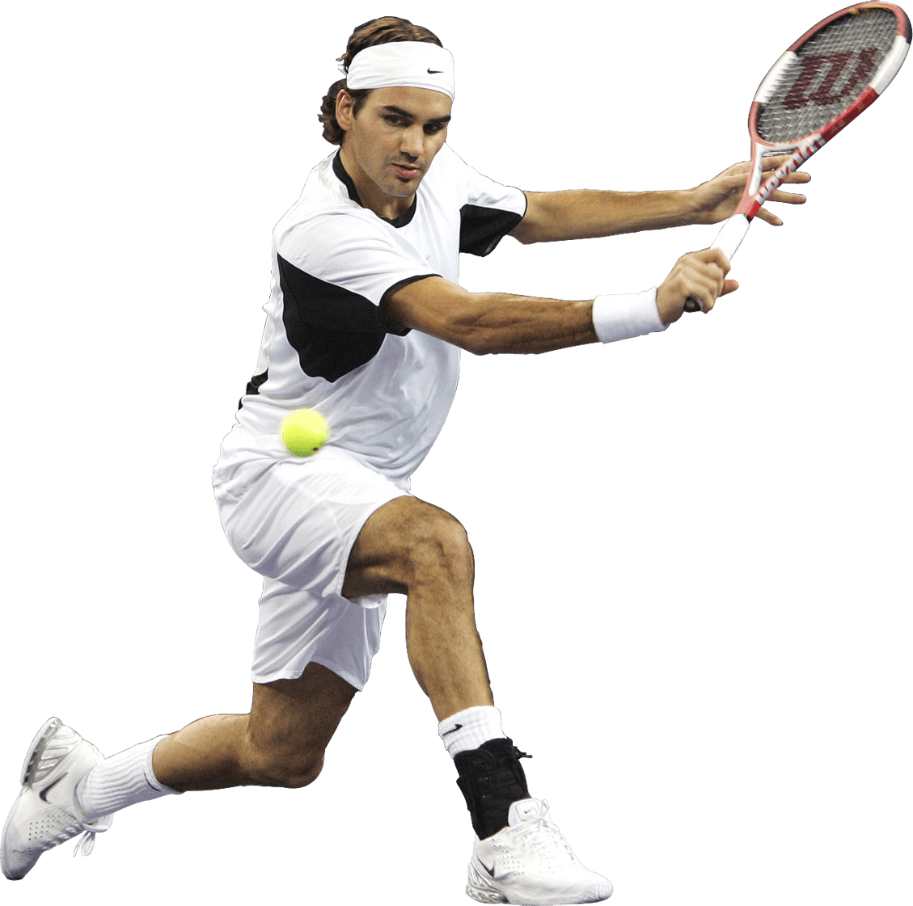

The Modern Era of Men’s Tennis saw a Golden age that spanned the last two decades and is arguably still not over. At the top of this golden era are three peaks, all at the height of 20 Slams (the joint highest in history). Each peak looks dramatically different from the other, one is a rocky and physical climb, one challenges your mind and only the most stoic can survive and one demands that you float with grace to the top. And while these three peaks are not accessible to mortals, the titans who sit atop have decimated the rest of the field into green plains, entertaining but nothing to brag about. The Big 3 are the overwhelming force of nature that defined the modern game, Federer, Nadal and Djokovic are without question the greatest who ever played the game.
If Nadal represents a high floor then Federer represents the highest ceiling. It is not uncommon to hear the phrase “Federer went God Mode today.” in tennis circles and for good reason, the sheer talent and skill of Federer put him a class apart. While he is somewhat lacking in mental fortitude (only when compared to the other two) he makes up for it with a fiery love for the game and the highest level that a tennis player can reach. When Federer’s at his best, no-one is better as shots will leave you in equal parts flummoxed and enthralled, his weaving of magic will pull you in and seal your fate.
Nadal is a beast who can run through brick walls. Any tennis player who has had the misfortune to face him has faced the pressure of Nadal’s powerful, spiteful strokes, packed with a wallop of top-spin that make them nearly impossible to hit back (especially on his favourite clay courts). But more importantly they have faced the “never die” attitude, the ability to chase down every ball and give every point his very best. Nadal truly respects his opponents and demonstrates his respect by not exposing a second of weakness. If you plan to take on the beast better come prepared to never stop fighting.
“First he takes your legs, then he takes your soul”, are the words to describe Djokovic. Coming from Serbia and hardened by developing his talent in a nation plagued by war, Djokovic tempered his youth to achieve a mental fortitude that’s frightening. A dominating presence on the court his percentage tennis and excellent game sense as well as his deep groundtrokes and excellent return game make him a true terror to face. Any weakness shown will be exploited and not even the best are exempt. That’s the reason Djokovic has persisted as the World No 1 still and is (seemingly) the last of the big 3 standing.
 Player
Player